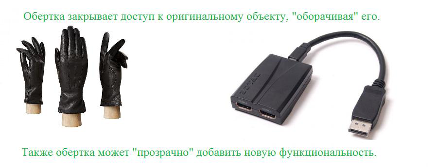
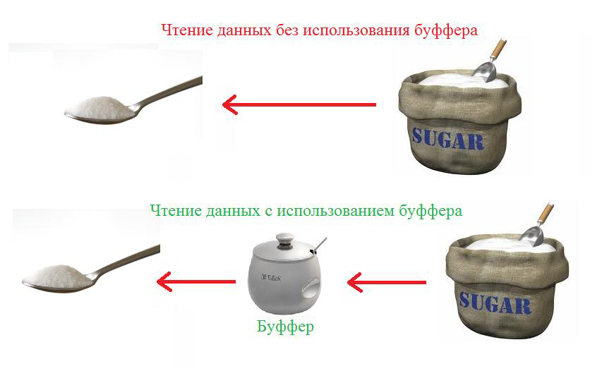
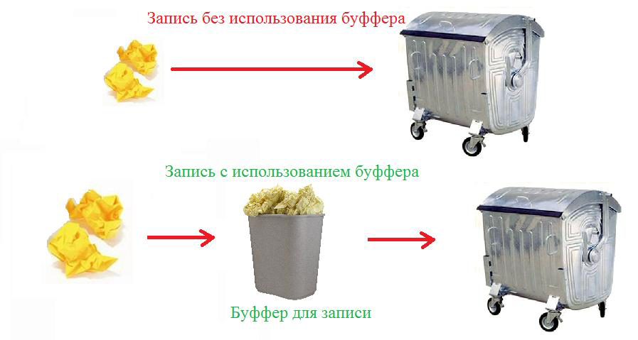
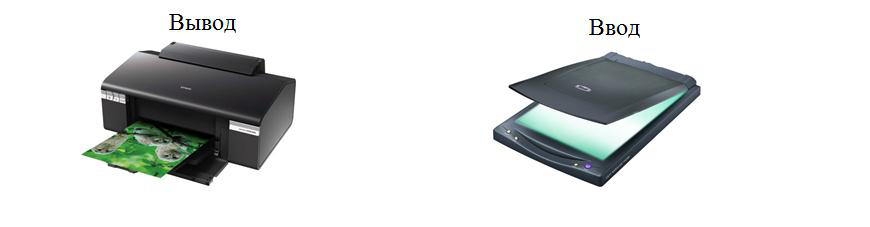

- Здорово, боец!
- Здравия желаю, товарищ капитан!
- У меня для тебя шикарная новость. Вот тебе задания для закрепления полученных навыков. Выполняй их каждый день, и твои навыки будут расти с неимоверной скоростью. Они специально разработаны для выполнения их в Intellij IDEA.
| Дополнительные задания для выполнения в Intellij Idea |
|---|
| 1. Английские буквы В метод main первым параметром приходит имя файла. Посчитать количество букв английского алфавита, которое есть в этом файле. Вывести на экран число (количество букв) Закрыть потоки. Не использовать try-with-resources |
| 2. Пробелы В метод main первым параметром приходит имя файла. Вывести на экран соотношение количества пробелов к количеству всех символов. Например, 10.45 1. Посчитать количество всех символов. 2. Посчитать количество пробелов. 3. Вывести на экран п2/п1*100, округлив до 2 знаков после запятой 4. Закрыть потоки. Не использовать try-with-resources |
| 3. Два в одном Считать с консоли 3 имени файла Записать в первый файл содержимого второго файла, а потом дописать в первый файл содержимое третьего файла Закрыть потоки. Не использовать try-with-resources |
| 4. Объединение файлов Считать с консоли 2 имени файла В начало первого файла записать содержимое второго файла так, чтобы получилось объединение файлов Закрыть потоки. Не использовать try-with-resources |
| 5. Округление чисел Считать с консоли 2 имени файла Первый файл содержит вещественные(дробные) числа, разделенные пробелом. Например, 3.1415 Округлить числа до целых и записать через пробел во второй файл Закрыть потоки. Не использовать try-with-resources Принцип округления: 3.49 - 3 3.50 - 4 3.51 - 4 -3.49 - -3 -3.50 - -3 -3.51 - -4 |
| 6. Встречаемость символов Программа запускается с одним параметром - именем файла, который содержит английский текст. Посчитать частоту встречания каждого символа. Отсортировать результат по возрастанию кода ASCII (почитать в инете). Пример: ','=44, 's'=115, 't'=116 Вывести на консоль отсортированный результат: [символ1] частота1 [символ2] частота2 Закрыть потоки. Не использовать try-with-resources Пример вывода: , 19 - 7 f 361 |
| 7. Поиск данных внутри файла Считать с консоли имя файла Найти в файле информацию, которая относится к заданному id, и вывести ее на экран в виде, в котором она записана в файле. Программа запускается с одним параметром: id (int) Закрыть потоки. Не использовать try-with-resources В файле данные разделены пробелом и хранятся в следующей последовательности: id productName price quantity где id - int productName - название товара, может содержать пробелы, String price - цена, double quantity - количество, int Информация по каждому товару хранится в отдельной строке |
| 8. Нити и байты Читайте с консоли имена файлов, пока не будет введено слово "exit" Передайте имя файла в нить ReadThread Нить ReadThread должна найти байт, который встречается в файле максимальное число раз, и добавить его в словарь resultMap, где параметр String - это имя файла, параметр Integer - это искомый байт. Закрыть потоки. Не использовать try-with-resources |
| 9. Файлы и исключения Читайте с консоли имена файлов Если файла не существует (передано неправильное имя файла), то перехватить исключение FileNotFoundException, вывести в консоль переданное неправильное имя файла и завершить работу программы Закрыть потоки. Не использовать try-with-resources Не используйте System.exit() |
| 10. Собираем файл Собираем файл из кусочков Считывать с консоли имена файлов Каждый файл имеет имя: [someName].partN. Например, Lion.avi.part1, Lion.avi.part2, ..., Lion.avi.part37. Имена файлов подаются в произвольном порядке. Ввод заканчивается словом "end" В папке, где находятся все прочтенные файлы, создать файл без приставки [.partN]. Например, Lion.avi В него переписать все байты из файлов-частей используя буфер. Файлы переписывать в строгой последовательности, сначала первую часть, потом вторую, ..., в конце - последнюю. Закрыть потоки. Не использовать try-with-resources |
- Те задания были для духов. Для дедушек я добавил бонусные задания повышенной сложности. Только для старослужащих.
| 1. Шифровка Задача: Придумать механизм шифровки/дешифровки Программа запускается с одним из следующих наборов параметров: -e fileName fileOutputName -d fileName fileOutputName где fileName - имя файла, который необходимо зашифровать/расшифровать fileOutputName - имя файла, куда необходимо записать результат шифрования/дешифрования -e - ключ указывает, что необходимо зашифровать данные -d - ключ указывает, что необходимо расшифровать данные |
| 2. Прайсы Задача: CrUD для таблицы внутри файла Считать с консоли имя файла для операций CrUD Программа запускается со следующим набором параметров: -c productName price quantity Значения параметров: где id - 8 символов productName - название товара, 30 chars (60 bytes) price - цена, 8 символов quantity - количество, 4 символа -с - добавляет товар с заданными параметрами в конец файла, генерирует id самостоятельно, инкрементируя максимальный id, найденный в файле В файле данные хранятся в следующей последовательности (без разделяющих пробелов): id productName price quantity Данные дополнены пробелами до их длины Пример:
19846 Шорты пляжные синие 159.00 12
198478 Шорты пляжные черные с рисунком173.00 17 19847983Куртка для сноубордистов, разме10173.991234 |
| 3. Прайсы 2 Задача: CrUD для таблицы внутри файла Считать с консоли имя файла для операций CrUD Программа запускается с одним из следующих наборов параметров: -u id productName price quantity -d id Значения параметров: где id - 8 символов productName - название товара, 30 chars (60 bytes) price - цена, 8 символов quantity - количество, 4 символа -u - обновляет данные товара с заданным id -d - производит физическое удаление товара с заданным id (все данные, которые относятся к переданному id) В файле данные хранятся в следующей последовательности (без разделяющих пробелов): id productName price quantity Данные дополнены пробелами до их длины Пример:
19846 Шорты пляжные синие 159.00 12
198478 Шорты пляжные черные с рисунко173.00 17 19847983Куртка для сноубордистов, разм10173.991234 |
- Привет, Амиго! Как день? Опять работой заваливают. Давай к нам в курьеры. Денег, конечно, ни хрена не платят, но и работать не надо.
- С одной стороны – это интересное предложение. С другой – жизнь в пустую – это не для меня.
- Ладно, давай меньше думать и больше смотреть:
- Надеюсь, ты остался доволен теми лекциями, что я тебе даю. Вот дополнительный материал, который ты можешь почитать, если не понял что-то из того, что тебе сегодня рассказали.
- Привет, Амиго!
| Задачи |
|---|
| 1. Wrapper (Decorator) Разберись, что делает программа Аналогично классу DecoratorRunnableImpl создай класс DecoratorMyRunnableImpl |
| 2. Расширяем AmigoOutputStream Используя шаблон проектирования Wrapper (Decorator) расширьте функциональность AmigoOutputStream В классе QuestionFileOutputStream при вызове метода close() должна быть реализована следующая функциональность: 1. Вывести в консоль фразу [Вы действительно хотите закрыть поток? Д/Н] 2. Считайте строку 3. Если считанная строка равна [Д], то закрыть поток 4. Если считанная строка не равна [Д], то не закрывать поток |
| 3. AmigoOutputStream 1 Измените класс AmigoOutputStream так, чтобы он стал Wrapper-ом для класса FileOutputStream. Используйте наследование. 2 При вызове метода close() должны выполняться следующая последовательность действий: 2.1 вызвать метод flush() 2.2 дописать следующий текст [JavaRush © 2012-2013 All rights reserved.], используйте метод getBytes() 2.3 закрыть поток методом close() |
| 4. UnsupportedFileName Измените класс TxtInputStream так, чтобы он работал только с txt-файлами (*.txt) Например, first.txt или name.1.part3.txt Если передан не txt-файл, например, file.txt.exe, то конструктор должен выбрасывать исключение UnsupportedFileNameException |
| 5. Таблица Измените класс TableInterfaceWrapper так, чтобы он стал Wrapper-ом для ATableInterface. Метод setModel должен вывести в консоль количество элементов в новом листе перед обновлением модели Метод getHeaderText должен возвращать текст в верхнем регистре - используйте метод toUpperCase() |
- Привет, Амиго! Сегодня мы будем заниматься очень интересной работой – подменой потока ввода – System.in.
System.in – это простая статическая переменная типа InputStream, но присвоить ей новое значение просто так нельзя. Зато можно воспользоваться методом System.setIn().
Для начала нам нужно создать буфер, потом положить в него какие-то значения. Затем завернуть в класс, который умеет из этого буфера читать данные по протоколу InputStream.
Вот как это выглядит:
| Код |
|---|
| public static void main(String[] args) throws IOException { //кладем данные в строку StringBuilder sb = new StringBuilder(); sb.append("Lena").append('\n'); sb.append("Olya").append('\n'); sb.append("Anya").append('\n'); String data = sb.toString(); //Оборачиваем строку в класс ByteArrayInputStream InputStream is = new ByteArrayInputStream(data.getBytes()); //подменяем in System.setIn(is); //вызываем обычный метод, который не подозревает о наших манипуляциях readAndPrintLine(); } public static void readAndPrintLine() throws IOException { InputStreamReader isr = new InputStreamReader(System.in); BufferedReader reader = new BufferedReader(isr); while (true) { String line = reader.readLine(); if (line == null) break; System.out.println(line); } reader.close(); isr.close(); } |
- Билаабо! Это самый интересный пример из всего, что я видел. Я и не знал, что так можно делать. Спасибо.
- Не за что, друг Амиго.
- Привет, Амиго! Сегодня я расскажу тебе немного интересных вещей про класс BufferedInputStream, но начнем мы с «обертки» и «мешка сахара».
- Это что еще за «обертка» и «мешок сахара»?
- Это метафоры. Слушай. Итак...
Паттерн проектирования «Обёртка» (Wrapper или Decorator) – это довольно простой и удобный механизм расширения функциональности объектов без использования наследования.
Пусть у нас есть класс Cat с двумя методами getName и setName:
| Код | Описание |
|---|---|
| class Cat { private String name; public Cat(String name) { this.name = name; } public String getName() { return this.name; } public void setName(String name) { this.name = name; } } |
Класс Кот(Cat) имеет два метода: getName & setName |
| public static void main(String[] args) { Cat cat = new Cat("Васька"); printName(cat); } public static printName(Сat cat) { System.out.println(cat.getName()); } |
Пример использования. В консоль будет выведена строка «Васька». |
Допустим нам нужно перехватить вызов методов у объекта cat и, возможно, внести туда небольшие изменения. Для этого нам понадобится обернуть его в свой класс-обертку.
Если мы хотим «обернуть» вызовы методов какого-то объекта своим кодом, то нам нужно:
1) Создать свой класс-обертку и унаследоваться от того же класса/интерфейса что и оборачиваемый объект.
2) Передать оборачиваемый объект в конструктор нашего класса.
3) Переопределить все методы в нашем новом классе, и вызвать в них методы оборачиваемого объекта.
4) Внести свои изменения «по вкусу»: менять результаты вызовов, параметры или делать что-то еще.
В примере ниже мы перехватываем вызов метода getName у объекта cat и немного меняем его результат.
| Код | Описание |
|---|---|
| class Cat { private String name; public Cat(String name) { this.name = name; } public String getName() { return this.name; } public void setName(String name) { this.name = name; } } |
Класс Кот(Cat) содержит два метода – получить имя и установить имя. |
| class CatWrapper extends Cat { private Cat original; public CatWrapper (Cat cat) { this.original = cat; } public String getName() { return "Кот по имени " + original.getName(); } public void setName(String name) { original.setName(name); } } |
Класс-обертка. Класс не хранит никаких данных, кроме ссылки на оригинальный объект. Класс в состоянии «пробрасывать» вызовы оригинальному объекту (setName), переданному ему в конструкторе. А также «перехватывать» эти вызовы и модифицировать их параметры и результаты. |
| public static void main(String[] args) { Cat cat = new Cat("Васька "); Cat catWrap = new CatWrapper (cat); printName(catWrap); } public static printName(Cat named) { System.out.println(named.getName()); } |
Пример использования. В консоль будет выведена строка «Кот по имени Васька». |
Т.е. мы тихонечко подменяем каждый оригинальный объект на объект-обертку, в который уже передаем ссылку на оригинальный объект. Все вызовы методов у обертки идут к оригинальному объекту, и все работает как часы.
- Мне понравилось. Решение несложное и функциональное.
- Еще я расскажу тебе про «мешок сахара», но это не паттерн, а метафора. Метафора к слову буфер и буферизация. Что же такое буферизация и зачем она нужна?
Допустим, сегодня очередь Риши готовить, а ты ему помогаешь. Риши еще нет, а я хочу выпить чай и прошу тебя принести мне ложечку сахара. Ты пошел в подвал, там стоит мешок с сахаром. Ты можешь принести мне целый мешок, но мешок мне не нужен. Мне нужна только одна ложка. Тогда ты, как хороший робот, набрал одну ложку и принес мне. Я добавила ее в чай, но все равно не очень сладко. И я попросила у тебя еще одну. Ты опять сходил в подвал и принес еще ложку. Потом пришла Элли, и я попросила тебя принести сахара для нее… Это все слишком долго и неэффективно.
Пришел Риша, посмотрел на все это и попросил тебя принести ему полную сахарницу сахара. Потом я и Элли стали просить сахар у Риши. Он просто давал его нам из сахарницы, и все.
То, что произошло после появления Риши называется буферизацией, а сахарница – это буфер. Благодаря буферизации «клиенты» могут читать данные из буфера маленькими порциями, а буфер, чтобы сэкономить время и силы, читает их из источника большими порциями.
- Классный пример, Ким. Я все понял. Просьба ложки сахара – это аналог чтения из потока одного байта.
- Да. Класс BufferedInputStream – классический представитель обертки-буфера. Он – класс-обертка над InputStream. При чтении данных из него, он читает их из оригинального InputStream’а большими порциями в буфер, а потом отдает из буфера потихоньку.
- Отлично. Все понятно. А буферы для записи бывают?
- Да, конечно.
- А можно пример?
- Представь себе мусорное ведро. Вместо того, чтобы каждый раз ходить выбрасывать мусор на улице в дезинтегратор, ты просто выкидываешь его в мусорное ведро. А Скрафи раз в две недели выносит его на улицу. Классический буфер.
- Как интересно. И гораздо понятнее, кстати, чем с мешком сахара.
- А метод flush() – это вынести мусор немедленно. Можно использовать перед приходом гостей.
- Привет, Амиго! Я уже почти забыл, что тебе надо учиться. На вот, потренируй свой процессор.
| Задачи |
|---|
| 1. Исправить ошибки Исправить функциональность в соответствии с требованиями Программа должна: 1. переписать все байты одного файла в другой одним куском. 2. закрывать потоки ввода-вывода Подсказка: 4 ошибки |
| 2. Подсчет запятых С консоли считать имя файла Посчитать в файле количество символов ',', количество вывести на консоль Закрыть потоки. Не использовать try-with-resources Подсказка: нужно сравнивать с ascii-кодом символа ',' |
| 3. Разделение файла Считать с консоли три имени файла: файл1, файл2, файл3. Разделить файл1 по следующему критерию: Первую половину байт записать в файл2, вторую половину байт записать в файл3. Если в файл1 количество байт нечетное, то файл2 должен содержать большую часть. Закрыть потоки. Не использовать try-with-resources |
| 4. Реверс файла Считать с консоли 2 имени файла: файл1, файл2. Записать в файл2 все байты из файл1, но в обратном порядке Закрыть потоки. Не использовать try-with-resources |
| 5. DownloadException 1 Считывать с консоли имена файлов. 2 Если файл меньше 1000 байт, то: 2.1 Закрыть все потоки 2.2 выбросить исключение DownloadException |
- Привет, Амиго! Сегодня мы снова будем заниматься разбором работы InputStream и OutputStream. На самом деле, то первое объяснение было немного упрощенным. Это не интерфейсы, а абстрактные классы, и они даже имеют по паре реализованных методов. Давай посмотрим, какие методы у них есть:
| Методы класса InputStream | Что метод делает |
|---|---|
| int read(byte[] buff); | - метод сразу читает блок байт в буфер (массив байт), пока буфер не заполнится или не закончатся байты там, откуда он их читает. Метод возвращает количество реально прочитанных байт (оно может быть меньше длины массива) |
| int read(); | - метод читает один байт и возвращает его как результат. Результат расширяется до int, для красоты. Если все байты уже прочитаны, метод вернет «-1». |
| int available(); | - метод возвращает количество непрочитанных (доступных) байт. |
| void close(); | - метод «закрывает» поток – вызывается после окончания работы с потоком. Объект выполняет служебные операции, связанные с закрытием файла на диске и т.д. Из потока больше нельзя читать данные. |
- Т.е. мы можем читать не только по одному байту, а и целыми блоками?
- Да.
- А записывать целыми блоками тоже можно?
- Да, вот смотри:
| Методы OutputStream | Что метод делает |
|---|---|
| void write(int c); | - метод записывает один байт информации. Тип int сужается до byte, лишняя часть просто отбрасывается. |
| void write(byte[] buff); | - метод записывает блок байт. |
| void write(byte[] buff, int from, int count); | - метод записывает часть блока байт. Используется в случаях, когда есть вероятность, что блок данных был заполнен не целиком |
| void flush(); | - если есть данные, которые хранятся где-то внутри и еще не записаны, то они записываются. |
| void close(); | - метод «закрывает» поток – вызывается после окончания работы с потоком. Объект выполняет служебные операции, связанные с закрытием файла на диске и т.д. В поток больше нельзя писать данные, flush при этом вызывается автоматически. |
- А как будет выглядеть код копирования файла, если мы будем читать не по одному байту, а целыми блоками?
- Гм. Примерно так:
| Копируем файл на диске |
|---|
| public static void main(String[] args) throws Exception { //Создаем поток-чтения-байт-из-файла FileInputStream inputStream = new FileInputStream("c:/data.txt"); // Создаем поток-записи-байт-в-файл FileOutputStream outputStream = new FileOutputStream("c:/result.txt"); byte[] buffer = new byte[1000]; while (inputStream.available() > 0) //пока есть еще непрочитанные байты { // прочитать очередной блок байт в переменную buffer и реальное количество в count int count = inputStream.read(buffer); outputStream.write(buffer, 0, count); //записать блок(часть блока) во второй поток } inputStream.close(); //закрываем оба потока. Они больше не нужны. outputStream.close(); } |
- С буфером все понятно, а что это за переменная count?
- Когда мы читаем самый последний блок данных в файле, может оказаться, что байт осталось не 1000, а, скажем, 328. Тогда и при записи нужно указать, что записать не весь блок, а только его первые 328 байт.
Метод read при чтении последнего блока вернет значение равное количеству реально прочитанных байт. Для всех чтений – 1000, а для последнего блока – 328.
Поэтому при записи блока мы указываем, что нужно записать не все байты из буфера, а байты с 0 по 328 (т.е. значение, хранимое в переменной count).
- Теперь понятно, как все это работает. Спасибо, Элли.
- Привет, Амиго!
| Задачи |
|---|
| 1. Максимальный байт Ввести с консоли имя файла Найти максимальный байт в файле, вывести его на экран. Закрыть поток ввода-вывода |
| 2. Минимальный байт Ввести с консоли имя файла Найти минимальный байт в файле, вывести его на экран. Закрыть поток ввода-вывода |
| 3. Самые частые байты Ввести с консоли имя файла Найти байт или байты с максимальным количеством повторов Вывести их на экран через пробел. Закрыть поток ввода-вывода |
| 4. Самые редкие байты Ввести с консоли имя файла Найти байт или байты с минимальным количеством повторов Вывести их на экран через пробел Закрыть поток ввода-вывода |
| 5. Сортировка байт Ввести с консоли имя файла Считать все байты из файла. Не учитывая повторений - отсортировать их по байт-коду в возрастающем порядке. Вывести на экран Закрыть поток ввода-вывода Пример байт входного файла 44 83 44 Пример вывода 44 83 |
- А начнем мы с потоков для ввода/вывода файлов. Но обо всем по порядку.
Для чтений и записи файлов есть два класса: FileInputStream и FileOutputStream. Как ты уже, наверное, догадался, FileInputStream позволяет последовательно читать из файла байты, а FileOutputStream – записывать в файл байты. Вот какие методы есть у этих классов:
| Метод | Что метод делает |
|---|---|
| FileInputStream(String fileName); | - это конструктор. Позволяет указать имя файла на диске, из которого созданный объект будет читать данные. |
| int read(); | - метод читает один байт из файла и возвращает его как результат. Тип результата расширяется до int. |
| int available(); | - метод возвращает количество непрочитанных (доступных) байт. |
| void close(); | - метод «закрывает» поток, вызывается после окончания работы с потоком. Объект выполняет служебные операции, связанные с закрытием файла на диске и т.д. Из потока больше нельзя читать данные. |
Давай ради интереса посчитаем сумму всех байт в файле на диске. Вот как будет выглядеть этот код:
| Подсчет суммы всех байт файла на диске |
|---|
| public static void main(String[] args) throws Exception { //создаем объект FileInputStream, привязанный к файлу «c:/data.txt». FileInputStream inputStream = new FileInputStream("c:/data.txt"); long sum = 0; while (inputStream.available() > 0) //пока остались непрочитанные байты { int data = inputStream.read(); //прочитать очередной байт sum += data; //добавить его к общей сумме } inputStream.close(); // закрываем поток System.out.println(sum); //выводим сумму на экран. } |
- Мы уже раньше что-то подобное разбирали. А как устроен FileOutputStream?
- Ок. Вот, смотри:
| Метод | Что метод делает |
|---|---|
| FileOutputStream (String fileName); | - это конструктор. Позволяет указать имя файла на диске, в который созданный объект будет писать данные. |
| void write(int data); | - метод записывает очередной байт, обрезая переменную data до одного байта. |
| void flush(); | - часто данные для записи сначала собираются в большие блоки в памяти, а потом только пишутся на диск. Команда flush требует немедленно записать всю несохраненную информацию на диск. |
| void close(); | - метод «закрывает» поток, вызывается после окончания работы с потоком. Объект выполняет служебные операции, связанные с закрытием файла на диске и т.д. В поток больше нельзя писать данные, flush при этом вызывается автоматически. |
- И все?
- Да, тут фактически только один метод для записи – write, который записывает только один байт за раз. Но благодаря ему можно записать в файл сколько угодно информации.
Программирование – это процесс разбиения одной большой и сложной задачи на много маленьких. Тут происходит практически тот же процесс: чтение и запись больших данных маленькими порциями – по кусочкам – по одному байту.
Вот как можно скопировать файл на диске, пользуясь этими классами:
| Копируем файл на диске |
|---|
| public static void main(String[] args) throws Exception { //Создаем поток-чтения-байт-из-файла FileInputStream inputStream = new FileInputStream("c:/data.txt"); // Создаем поток-записи-байт-в-файл FileOutputStream outputStream = new FileOutputStream("c:/result.txt"); while (inputStream.available() > 0) //пока есть еще непрочитанные байты { int data = inputStream.read(); // прочитать очередной байт в переменную data outputStream.write(data); // и записать его во второй поток } inputStream.close(); //закрываем оба потока. Они больше не нужны. outputStream.close(); } |
- Спасибо, Риша. Наконец-то понял, как на самом деле работает этот код.
- Привет, Амиго! Сегодня мы будет знакомиться с потоками ввода-вывода. Пару дней назад мы немного цепляли данную тему, но сегодня пройдемся по ней основательно. Потоки ввода-вывода делятся на 4 категории:
1) Потоки делятся по направлению: потоки ввода и потоки вывода
2) Потоки делятся по типу данных: работают с байтами или работают с символами.
Таблица:
| Поток ввода | Поток вывода | |
|---|---|---|
| Работает с байтами | InputStream | OutputStream |
| Работает с символами | Reader | Writer |
Если объект реализует интерфейс InputStream, значит, он поддерживает последовательное чтение из него байт (byte).
Если объект реализует интерфейс OutputStream, значит, он поддерживает последовательную запись в него байт (byte).
Если объект реализует интерфейс Reader, значит, он поддерживает последовательное чтение из него символов (char).
Если объект реализует интерфейс Writer, значит, он поддерживает последовательную запись в него символов (char).
Поток вывода напоминает принтер. На принтер мы можем выводить документы. В поток вывода мы можем выводить данные.
Тогда поток ввода можно сравнить со сканером, ну или с розеткой. С помощью сканера мы можем ввести документы к себе в компьютер. Также мы можем подключится к розетке и получать из нее электричество. Из потока ввода мы можем получать данные.
- А где они используются?
- Эти классы используются в Java повсеместно. Известный нам System.in – это статическая переменная по имени in типа InputStream в классе System.
- Надо же! Оказывается, все это время я пользовался потоком InputStream и не знал об этом. System.out – тоже поток?
- Да, System.out – это статическая переменная по имени out типа PrintStream (наследник OutputStream) в классе System.
- Т.е. я все время пользовался потоками и даже не подозревал об этом?
- Да, и это говорит лишь о том, насколько такие потоки удобны. Просто берешь и пользуешься.
- Хотя этого нельзя сказать про System.in. К нему постоянно приходилось добавлять BufferedReader и InputStreamReader.
- Да, это так. Но на это тоже были свои причины.
Видишь ли, типов данных очень много, как и способов работы с ними. Поэтому количество стандартных классов ввода-вывода очень быстро росло, хоть они и делали все почти то же самое. Чтобы избежать такой сложности, разработчики Java применили принцип абстракции и разделили классы на много маленьких частей.
Зато их можно соединить последовательно и получить очень сложную функциональность, если она тебе понадобилась. Смотри пример:
| Вывод строки на консоль |
| System.out.println("Hello"); |
| Сохранили поток вывода на консоль в отдельную переменную. Выводим в поток строку. |
| PrintStream console = System.out; console.println("Hello"); |
| Создали динамический (растягивающийся) массив байт в памяти. Связали его с новым потоком вывода – объектов PrintStream Выводим в поток строку. |
| ByteArrayOutputStream stream = new ByteArrayOutputStream(); PrintStream console = new PrintStream(stream); console.println("Hello"); |
- Действительно, чем-то похоже на конструктор Lego. Только непонятно, что весь этот код делает.
- Пусть это тебя не беспокоит сейчас. Всему свое время.
Хочу, чтобы ты запомнил вот что: если класс реализует интерфейс OutputStream – он позволяет записывать в него байты. Почти так же, как ты выводишь данные на консоль. Что он будет с этими данными делать – его задача. В «конструкторе» важно не назначение отдельного элемента, а насколько классные вещи мы можем собрать, благодаря многообразию существующих элементов.
- Хорошо. Тогда с чего мы начнем?

Привяжите социальную сеть к вашему аккаунту: